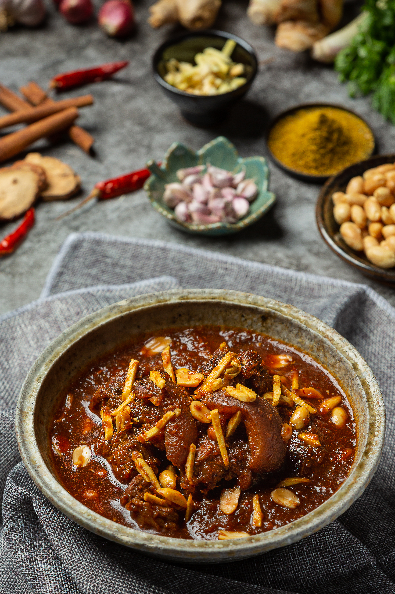
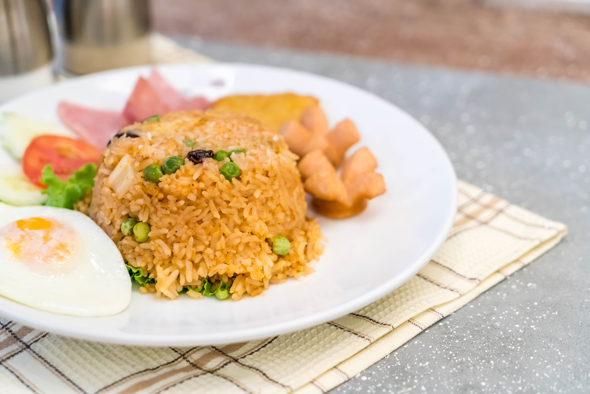
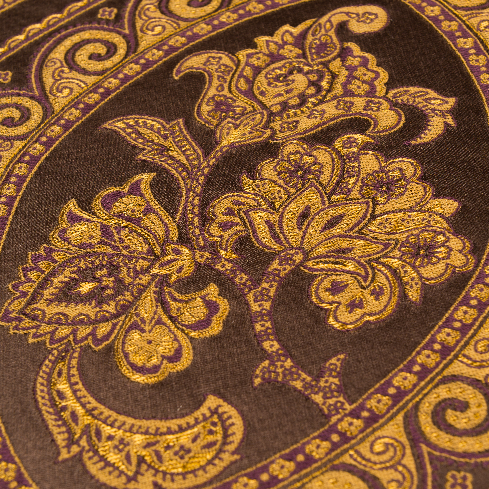
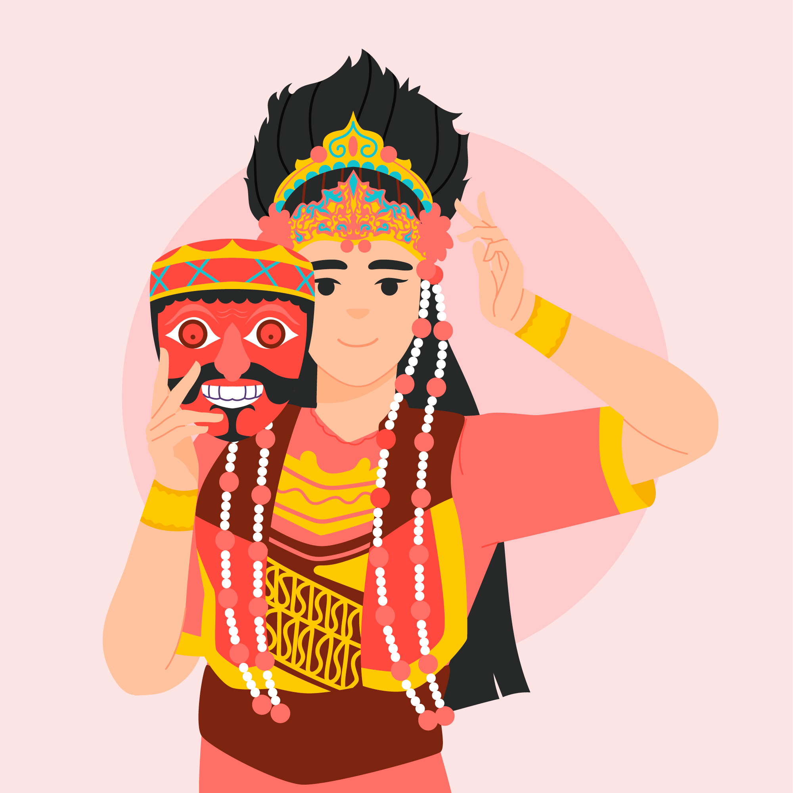

WELCOME TO
INDONESIA
Explore pristine beaches, foods, and vibrant cultural heritage.
Featured Tours → Tap HereRendang
Rendang is a traditional Indonesian dish from West Sumatra, made by slow-cooking beef with coconut milk and rich spices.

Nasi Goreng
Nasi Goreng is Indonesia’s famous fried rice, seasoned with sweet soy sauce and spices.

Sate
Sate is grilled skewered meat served with peanut sauce and is popular across Indonesia.

Indonesian Culture
Explore the rich traditions, arts, and heritage that have been passed down through generations in Indonesia.

Batik
Batik is a traditional Indonesian textile art recognized by UNESCO. Each pattern tells a story or represents a certain philosophy, often inspired by nature, myths, or local beliefs. Beyond its beauty, Batik serves as a cultural symbol used in ceremonies, festivals, and everyday life across different regions of Indonesia.
Wayang
Wayang is a classical shadow puppet performance that has been performed for centuries to tell epic stories and moral lessons. Each puppet is intricately crafted, and the performances are often accompanied by traditional Gamelan music. Wayang is more than entertainment; it is a medium to teach values, history, and spirituality.

Traditional Dance
Indonesian traditional dances are diverse, expressive, and rich in meaning. Each region has its own style, costumes, and stories, often depicting myths, rituals, or historical events. From the graceful Balinese Legong to the powerful Sumatran Piring dance, these performances are a celebration of movement, music, and cultural identity that continue to captivate audiences.